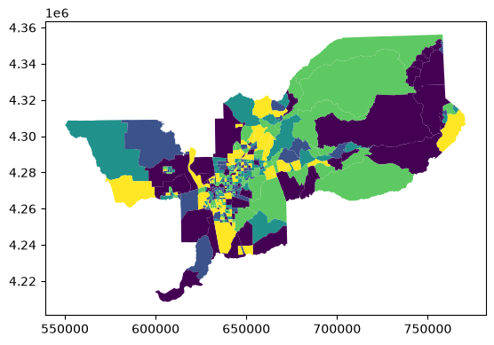
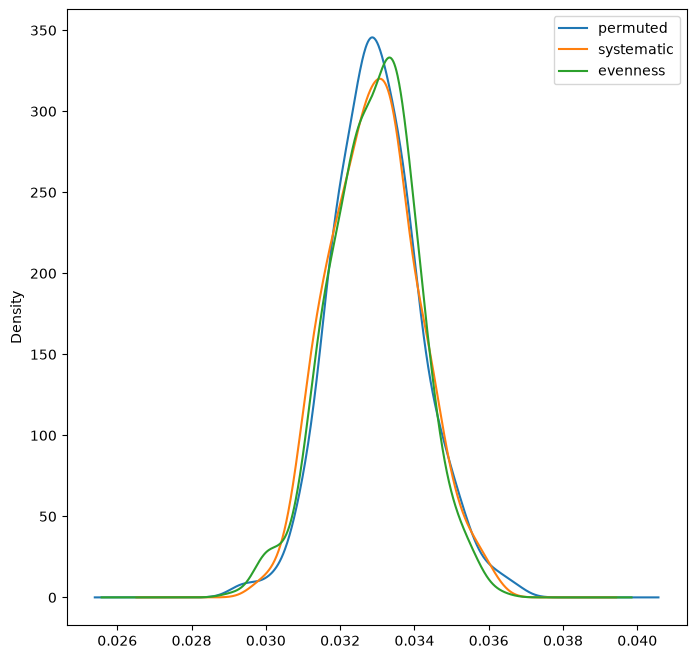
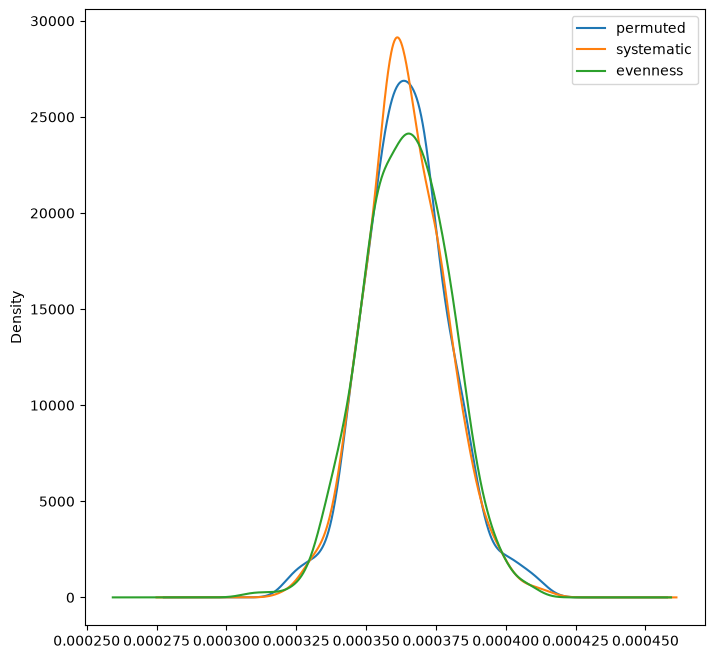

Simulating Population Groups Distributed Randomly in Space¶
For conducting single-value inference, the segregation package offers several techniques for generating random population distributions that respect the characteristics of an input dataset. This notebook walks through the assumptions and outputs of each approach using the Sacramento demonstration dataset bundled with libpysal.
TL;DR¶
evenness includes group-level variation
systematic includes unit-level variation
individual permutation includes neither
%load_ext watermark
%watermark -a 'eli knaap' -v -d -u -p segregation,geopandas,libpysal
Author: eli knaap
Last updated: 2026-09-04
Python implementation: CPython
Python version : 3.14.7
IPython version : 9.17.1
segregation: 2.5.6.dev83+g2e095ced1
geopandas : 1.1.4
libpysal : 4.15.0
import numpy as np
import geopandas as gpd
import matplotlib.pyplot as plt
from libpysal.examples import load_example
from segregation.singlegroup import Gini
from segregation.multigroup import MultiInfoTheory
from segregation.inference import (
SingleValueTest,
simulate_evenness,
simulate_person_permutation,
simulate_systematic_randomization,
simulate_null,
)
sacramento = gpd.read_file(load_example("Sacramento1").get_path("sacramentot2.shp"))
sacramento = sacramento.to_crs(sacramento.estimate_utm_crs())
We focus on the Black population (BLACK) relative to the total population (TOT_POP) of each tract.
sacramento["BLACK"].sum()
np.int64(122022)
sacramento["TOT_POP"].sum()
np.int64(1796857)
sacramento["BLACK"].sum() / sacramento["TOT_POP"].sum()
np.float64(0.06790857591895182)
gini = Gini(sacramento, group_pop_var="BLACK", total_pop_var="TOT_POP")
Evenness¶
Evenness takes draws from the population of each unit, with the probability of choosing the focal group equal to its regional share (locations drawing from distributions of population groups).
# the region-wide share of the Black population
sacramento["BLACK"].sum() / sacramento["TOT_POP"].sum()
np.float64(0.06790857591895182)
sacramento[["TOT_POP"]].reset_index(drop=True).head()
| TOT_POP | |
|---|---|
| 0 | 5501 |
| 1 | 2072 |
| 2 | 3633 |
| 3 | 1683 |
| 4 | 5794 |
For the first tract, one draw is taken per resident; on each draw the probability that the resident belongs to the focal group equals the region-wide share computed above.
evenness = simulate_evenness(sacramento, group="BLACK", total="TOT_POP")
evenness
| BLACK | TOT_POP | geometry | |
|---|---|---|---|
| 0 | 391 | 5501 | POLYGON ((740409.853 4338451.728, 740199.864 4... |
| 1 | 140 | 2072 | POLYGON ((753400.378 4347151.08, 753395.816 43... |
| 2 | 212 | 3633 | POLYGON ((758318.262 4352123.456, 758319.774 4... |
| 3 | 99 | 1683 | POLYGON ((750839.595 4342678.807, 750805.84 43... |
| 4 | 370 | 5794 | POLYGON ((670062.02 4311030.409, 670133.819 43... |
| ... | ... | ... | ... |
| 398 | 492 | 7381 | POLYGON ((653551.937 4240067.267, 653554.274 4... |
| 399 | 224 | 3123 | POLYGON ((649291.986 4235408.766, 649242.118 4... |
| 400 | 472 | 6843 | POLYGON ((647004.438 4239439.343, 647018.86 42... |
| 401 | 124 | 1859 | POLYGON ((649798.098 4234453.137, 649774.513 4... |
| 402 | 110 | 1934 | POLYGON ((599784.769 4213752.016, 599769.473 4... |
403 rows × 3 columns
evenness.plot("BLACK", scheme="quantiles")
<Axes: >

evenness["BLACK"].sum()
np.int64(122007)
evenness["BLACK"].sum() == sacramento["BLACK"].sum()
np.False_
evenness["BLACK"].sum() / evenness["TOT_POP"].sum()
np.float64(0.06790022800924057)
sacramento["BLACK"].sum() / sacramento["TOT_POP"].sum()
np.float64(0.06790857591895182)
evenness["BLACK"].sum() / evenness["TOT_POP"].sum() == sacramento["BLACK"].sum() / sacramento["TOT_POP"].sum()
np.False_
evenness["TOT_POP"].sum() == sacramento["TOT_POP"].sum()
np.True_
np.array_equal(evenness["TOT_POP"].values, sacramento["TOT_POP"].values)
True
We haven’t changed the total population in each unit or in the region, but we have changed the number of people in the focal group marginally.
Systematic Randomization¶
The systematic approach takes draws from the regional population of each group, with the probability of choosing a geographic unit equal to the share of the region’s population that currently lives there (people drawing from a distribution of locations).
sacramento["BLACK"].sum()
np.int64(122022)
(sacramento["TOT_POP"] / sacramento["TOT_POP"].sum()).reset_index(drop=True).head()
0 0.003061
1 0.001153
2 0.002022
3 0.000937
4 0.003225
Name: TOT_POP, dtype: float64
For each member of the focal group, the probability of being placed in a given tract equals that tract’s share of the total population (shown above for the first few tracts).
systematic = simulate_systematic_randomization(
sacramento, group="BLACK", total="TOT_POP"
)
systematic
| index | geometry | BLACK | other_group_pop | TOT_POP | |
|---|---|---|---|---|---|
| 0 | 0 | POLYGON ((740409.853 4338451.728, 740199.864 4... | 377 | 5171 | 5548 |
| 1 | 1 | POLYGON ((753400.378 4347151.08, 753395.816 43... | 126 | 1863 | 1989 |
| 2 | 2 | POLYGON ((758318.262 4352123.456, 758319.774 4... | 244 | 3347 | 3591 |
| 3 | 3 | POLYGON ((750839.595 4342678.807, 750805.84 43... | 128 | 1614 | 1742 |
| 4 | 4 | POLYGON ((670062.02 4311030.409, 670133.819 43... | 383 | 5332 | 5715 |
| ... | ... | ... | ... | ... | ... |
| 398 | 398 | POLYGON ((653551.937 4240067.267, 653554.274 4... | 472 | 6920 | 7392 |
| 399 | 399 | POLYGON ((649291.986 4235408.766, 649242.118 4... | 205 | 2901 | 3106 |
| 400 | 400 | POLYGON ((647004.438 4239439.343, 647018.86 42... | 466 | 6333 | 6799 |
| 401 | 401 | POLYGON ((649798.098 4234453.137, 649774.513 4... | 142 | 1729 | 1871 |
| 402 | 402 | POLYGON ((599784.769 4213752.016, 599769.473 4... | 126 | 1858 | 1984 |
403 rows × 5 columns
systematic["BLACK"].sum()
np.int64(122022)
systematic["BLACK"].sum() == sacramento["BLACK"].sum()
np.True_
systematic["BLACK"].sum() / systematic["TOT_POP"].sum() == sacramento["BLACK"].sum() / sacramento["TOT_POP"].sum()
np.True_
np.array_equal(systematic["TOT_POP"].values, sacramento["TOT_POP"].values)
False
We haven’t changed the total number of people in each group, but we have changed the total number of people in each unit.
Individual-level Permutation¶
Individual-level permutation doesn’t take draws from a probability distribution, but instead randomizes which unit each person lives in.
permutation = simulate_person_permutation(
sacramento, group="BLACK", total="TOT_POP"
)
permutation["BLACK"].sum()
np.int64(122022)
permutation["BLACK"].sum() == sacramento["BLACK"].sum()
np.True_
permutation["BLACK"].sum() / permutation["TOT_POP"].sum() == sacramento["BLACK"].sum() / sacramento["TOT_POP"].sum()
np.True_
We haven’t changed the total number of people in any group, or the total population in any unit; we’ve only randomized which unit each person lives in.
Simulating Null Distributions¶
simulate_null generates a series of simulated segregation statistics (in parallel) using the randomization functions described above. Those simulated values can then serve as a reference distribution to test the hypothesis of “no segregation”.
groups = ["BLACK", "WHITE", "ASIAN", "HISP"]
G = Gini(sacramento, group_pop_var="BLACK", total_pop_var="TOT_POP")
H = MultiInfoTheory(sacramento, groups=groups)
G.statistic
0.6361755332635235
H.statistic
np.float64(0.17101602978588876)
Single Group¶
G_even = simulate_null(seg_class=G, sim_func=simulate_evenness)
G_systematic = simulate_null(seg_class=G, sim_func=simulate_systematic_randomization)
G_permuted = simulate_null(seg_class=G, sim_func=simulate_person_permutation)
fig, ax = plt.subplots(figsize=(8, 8))
for series, label in [
(G_permuted, "permuted"),
(G_systematic, "systematic"),
(G_even, "evenness"),
]:
series.name = label
series.plot(kind="kde", ax=ax, legend=True)

Multi Group¶
H_even = simulate_null(seg_class=H, sim_func=simulate_evenness)
H_systematic = simulate_null(seg_class=H, sim_func=simulate_systematic_randomization)
H_permuted = simulate_null(seg_class=H, sim_func=simulate_person_permutation)
fig, ax = plt.subplots(figsize=(8, 8))
for series, label in [
(H_permuted, "permuted"),
(H_systematic, "systematic"),
(H_even, "evenness"),
]:
series.name = label
series.plot(kind="kde", ax=ax, legend=True)

Despite their different methods, all three approaches simulate similar distributions, but they differ with respect to how and in which dimensions the randomization occurs. As with Boisso et al., the distribution is not centered on 0. In other cases, such as when minority populations are small or highly unbalanced among multiple groups, it is possible that the different randomization methods could diverge to simulate different distributions.